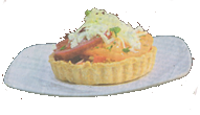

A selection of Chloé recipe
These recipes have been selected by our chefs and represents a selection of the best traditional French cuisine that are easy to make and packed with great flavors.

Tarte Rustique with Heirloom Tomatoes
Ingredients:
Ingredients:
- 1 recipe pate brise
- 1 recipe piperade
- 4 medium sized heirloom tomatoes sliced ¼ inch
- 4 oz. Crumbled goat cheese
- 4 oz. Mezzo Secco cheese
- 2 T. chopped fresh basil, chives or Italian parsley
Preparation:
Pate Brise
Yields 5 6 inch tarts
Ingredients:
Procedure
Sift flour, salt, and sugar in medium bowl. Add butter and shortening; rub between fingers or with a dough cutter until mixture resembles coarse meal.
Add 4 tablespoons cold water/egg mixture. Work mixture with fingertips until dough begins to form. Add cold water as needed. Form dough into ball and flatten. Cover and chill in refrigerator for at least 1 hour or until firm.
Working quickly, roll out dough to 1/8-inch thickness on floured surface. Cut dough with a 6 inch round cookie cutter or cut approximately 1 inch over the diameter of your tart pan. Press dough onto bottom and all the way up sides of tart pan, pressing hard enough to adhere to sides. Let rest in refrigerator a minimum of 30 minutes.
Preheat oven to 350°F.
Remove tart shells from the refrigerator and line with parchment paper. Fill with pie weights or dried beans. Bake approximately 15 minutes or until the sides begin to turn golden brown. Remove the parchment paper and weights and bake for 5-8 minutes more or until the shell is uniform in color.
Remove from oven, cool and remove tarts from pans.
Piperade
Yield: filling for approximately 6 5-inch pre-cooked tart shells Ingredients:
Procedure
Over medium-high heat sauté onions in olive oil until slightly caramelized. Add peppers and continue cooking until softened. Add garlic and cook approximately 2 minutes more. Season to taste with salt and pepper. Take off heat and cool down before assembling tart. May be made in advance.
Finishing Procedure
Preheat oven or toaster oven to 425°F
Divide the cooled piperade mixture between the 6 tarts. Place a layer of heirloom tomatoes on top of the piperade mixture. Sprinkle the tomato layer with fresh herbs, goat cheese & Mezzo Secco cheese making sure to reserve enough for the top layer. Add a second layer of Tomatoes, cheeses & herbs
Heat approximately 5-6 minutes until cheese bubbles and is golden brown. Easy accompaniment: Toss baby Arugula with fresh herbs, thinly sliced red onions and basil grain mustard vinaigrette.
Pate Brise
Yields 5 6 inch tarts
Ingredients:
- 1 3/4 cups all purpose flour
- 1/4 t. salt
- Pinch of sugar
- 1 Stick unsalted chilled butter, cut into 1/2-inch cubes
- 1 egg whisked with 3T. cold water
Procedure
Sift flour, salt, and sugar in medium bowl. Add butter and shortening; rub between fingers or with a dough cutter until mixture resembles coarse meal.
Add 4 tablespoons cold water/egg mixture. Work mixture with fingertips until dough begins to form. Add cold water as needed. Form dough into ball and flatten. Cover and chill in refrigerator for at least 1 hour or until firm.
Working quickly, roll out dough to 1/8-inch thickness on floured surface. Cut dough with a 6 inch round cookie cutter or cut approximately 1 inch over the diameter of your tart pan. Press dough onto bottom and all the way up sides of tart pan, pressing hard enough to adhere to sides. Let rest in refrigerator a minimum of 30 minutes.
Preheat oven to 350°F.
Remove tart shells from the refrigerator and line with parchment paper. Fill with pie weights or dried beans. Bake approximately 15 minutes or until the sides begin to turn golden brown. Remove the parchment paper and weights and bake for 5-8 minutes more or until the shell is uniform in color.
Remove from oven, cool and remove tarts from pans.
Piperade
Yield: filling for approximately 6 5-inch pre-cooked tart shells Ingredients:
- 2 T. extra virgin olive oil
- 1 small yellow onion, small dice.
- 2 sweet red peppers and 3 sweet gypsy peppers, seeded, julienne cut
- 2 cloves garlic, minced
- Salt and freshly ground pepper to taste
Procedure
Over medium-high heat sauté onions in olive oil until slightly caramelized. Add peppers and continue cooking until softened. Add garlic and cook approximately 2 minutes more. Season to taste with salt and pepper. Take off heat and cool down before assembling tart. May be made in advance.
Finishing Procedure
Preheat oven or toaster oven to 425°F
Divide the cooled piperade mixture between the 6 tarts. Place a layer of heirloom tomatoes on top of the piperade mixture. Sprinkle the tomato layer with fresh herbs, goat cheese & Mezzo Secco cheese making sure to reserve enough for the top layer. Add a second layer of Tomatoes, cheeses & herbs
Heat approximately 5-6 minutes until cheese bubbles and is golden brown. Easy accompaniment: Toss baby Arugula with fresh herbs, thinly sliced red onions and basil grain mustard vinaigrette.